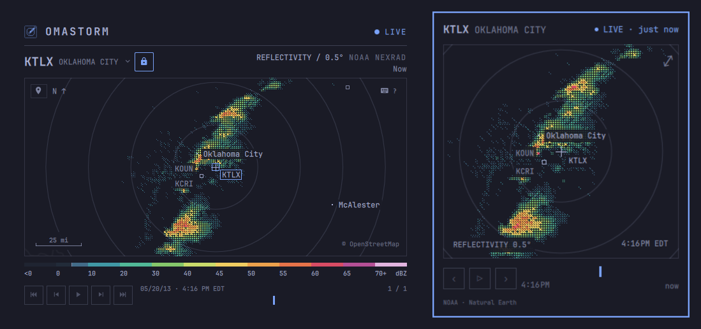
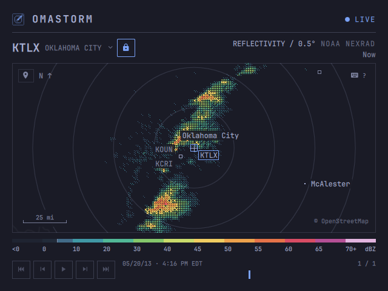
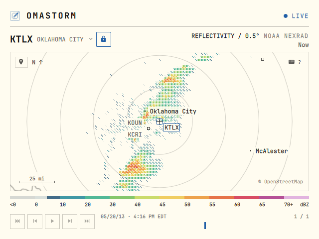
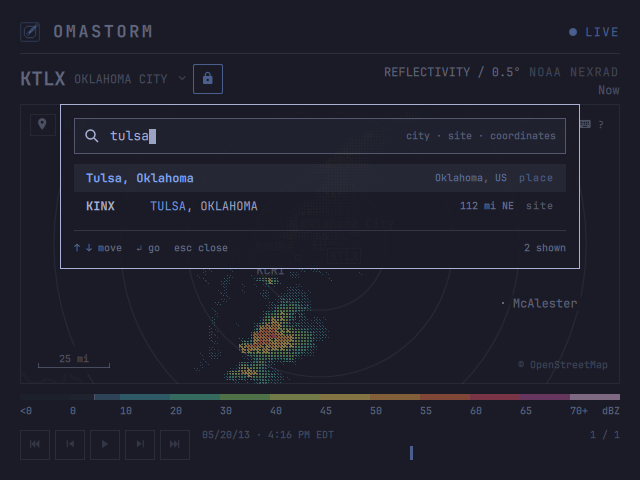
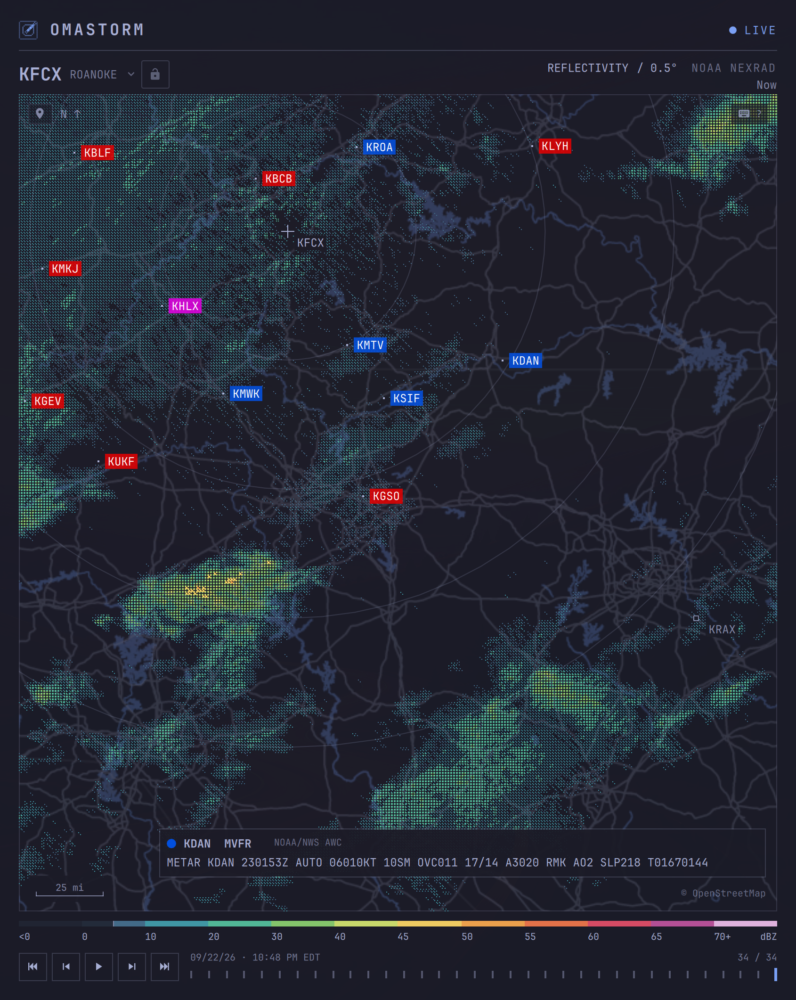
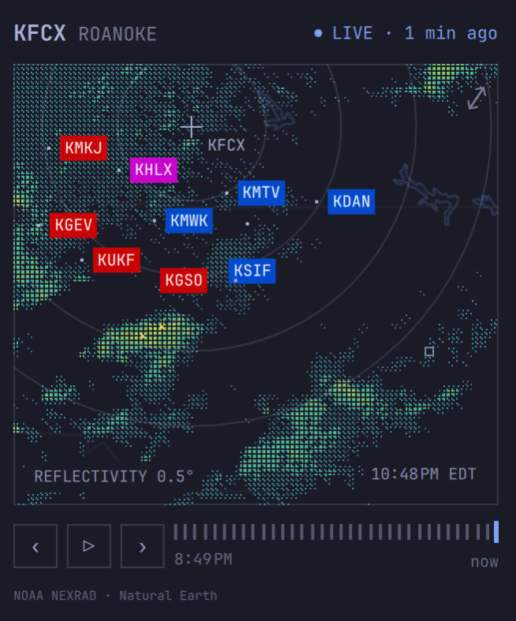
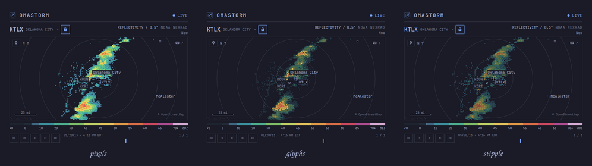

Weather radar for Omarchy
Live weather radar,right in your Omarchy bar.
See nearby storms at a glance. Open the full radar window to explore and play back recent scans.

- Live radar. NEXRAD paints as the antenna turns; OPERA supplies complete mosaic frames. Actual scan times and stale-data status stay visible.
- Recent scans. Play, step, and scrub the history each source provides.
- Find your place. Search a city, a radar site, or pasted coordinates.
- Airport weather. Show U.S. and Canadian METAR flight categories beside live NEXRAD radar.
- Your theme. Chrome follows Omarchy. Radar color comes from the measured reflectivity.
- Keyboard controls. Pan, zoom, search, and play. Every key is rebindable.
- U.S. and Europe. NOAA NEXRAD in the U.S. and EUMETNET OPERA in Europe.
Coverage varies with radar range and available data. A city appearing in search does not guarantee radar coverage.
Install
Omarchy 4 · x86_64 · aarch64$ omarchy plugin add https://github.com/wesleygrimes/omastorm.git --enable-
Pick a bar section when asked. First open downloads the
pinned engine from GitHub Releases, checks its sha256, and installs
it under
~/.local/share/omastorm/bin. - Choose your place. Start at your Omarchy weather city if one is set. Otherwise, pick a place manually or choose approximate location. Your view is remembered.
-
Open the window. Click the map or press Enter. Drag to pan,
scroll to zoom, and press
?for every key.
-- ~/.config/hypr/bindings.lua, optional: open the window from the keyboard
o.bind("SUPER + SHIFT + R", "Omastorm", "omarchy shell shell toggle com.omastorm.radar '{}'")Optional: add Omastorm to your app launcher. Configuration, remembered view, and cached scans stay in Omastorm’s own directories.
At home in your theme.


Your place. Your radar.
One search field
Press / or s. A city or coordinates centers the map and selects radar covering that location. Add a region or country qualifier such as London, UK. A site ID such as KTLX locks that dish and centers on it. Search opera to select and lock the European mosaic.
Follow or lock
Pan to follow radar covering the map, or use the padlock to pin one radar. Click the source name for covering mosaics and nearby dishes. n resumes automatic selection for the current map centre.

Approximate location is optional. On click, wttr.in estimates your city from the request’s public IP. There is no GPS or background tracking. A VPN can put the estimate in the wrong place; choose manually instead. Press m to locate again.
Airport observations on the map.
Press a in the window or popover to show nearby airports. Their codes replace city labels, colored by the reported flight category: green VFR, blue MVFR, red IFR, or magenta LIFR. Click a code to read the raw METAR. The overlay is off by default and works with live NEXRAD radar in the U.S. and Canada; it does not appear on the European OPERA mosaic.


METARs are current observations from the
NOAA/NWS Aviation Weather Center, not forecasts or flight guidance. Set
[metar] show = true to start with the overlay on;
configuration
covers station selection and appearance.
Watch the weather move.
Selecting a radar loads its recent scans for playback. NEXRAD keeps up to 60 frames over two hours; OPERA keeps up to 12 mosaic frames. Space plays or pauses, [ and ] step a frame, and Home / End jump to the oldest or newest.
The frame age tells you how stale the picture is; the timeline stamp tells you when the sweep was observed. The LIVE light turns yellow after ten minutes of stale data and red when the station or data bucket is unreachable. Cached frames stay available.
One sweep. Three treatments.
1 Pixels paints solid blocks. 2 Glyphs, the default, uses denser marks for stronger returns. 3 Stipple lets more map show through. All three sample the same radar data and palette.

What the colors mean
For NOAA NEXRAD, Omastorm shows reflectivity on the lowest tilt of Level II scans. EUMETNET OPERA combines the strongest returns from multiple radars and elevations into one image. Color is dBZ: stronger returns get warmer colors. Reflectivity is not a rain rate, a forecast, or a weather warning.
Measured returns below 5 dBZ are hidden by default, as the legend indicates. Press w to show them. Learn to read the radar
Keep it current.
omarchy plugin update com.omastorm.radar
omarchy restart shellRestart the shell to load the updated plugin and engine pin. Omastorm also shows an update notice in the popover; clicking it restarts the shell.
Set preferences in ~/.config/omastorm/config.toml. Your
last view is saved separately, so panning never rewrites your
configuration.
Support Omastorm
Help keep the radar running.
Omastorm is free and open source. If it’s earned a place in your bar, consider sponsoring the work behind it.
Your support helps make time for the details: reliable live data, thoughtful improvements, and a radar that feels at home on your desktop.
Sponsor on GitHubA bug report, a contribution, or sharing Omastorm helps too. Thanks for being part of it.